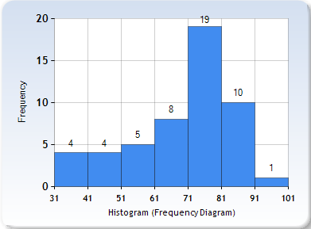
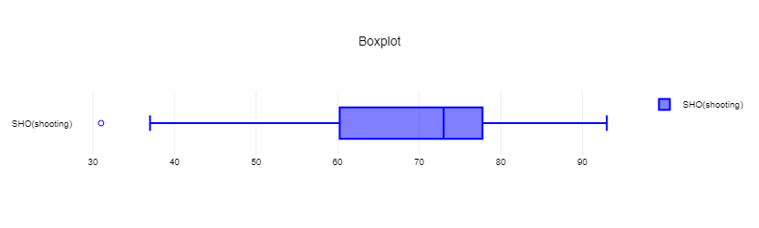
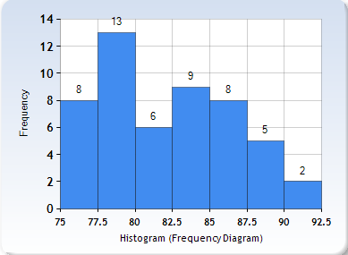
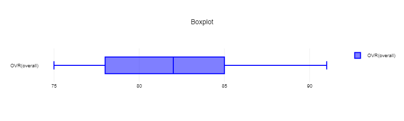

Quantitative Variables
SHO (shooting)
| Measures of Center | Values |
|---|---|
| Mean | 68.49 |
| Median | 73 |
| Mode | 73 |
| Measure of Variablity | Values |
|---|---|
| Range | 62 |
| Standard Deviation | 14.91 |
| Variance | 222.41 |
According to our mode, which is 73, most of the players have a great shooting skill. The standrd deviation, which is 14.91, tells us that the values are quite far from each other.


The data for the shooting skill of the players is skewed to the left, which means there are a lot of football players who are skilled in shooting. The only outlier value is 31, the minimum value.
OVR (overall)
| Measures of Center | Values |
|---|---|
| Mean | 82 |
| Median | 82 |
| Mode | 78 |
| Measures of Variablity | Values |
|---|---|
| Range | 16 |
| Standard Deviation | 4.42 |
| Variance | 19.56 |
Since the mean and mode are high, it means that the players are good in other aspects of football. They're not only good at shooting, but they may also be fast or protective. The standard variation, 4.42, means that the values are squeezed in, and that can be seen on the Histogram and Box and Whisper Plot below.


The Histogram and Boxplot are skewed to the right, which means that values can be mostly seen on the left. It also means that the football players are good at adapting to different situations.

RAV Sports News. All Rights Reserved. 2023